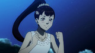
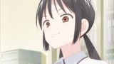
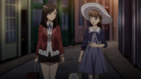
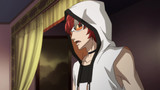

Sortez de l'ordinaire
GeGeGe no Kitarô
Il existe un monde au-delà de ce qu'on peut voir. Rejoignez Mana et Kitarô au pays des yôkai...
Le maître du manga d'horreur
Junji Itô Collection
Des histoires courtes adaptées des œuvres célèbres de Junji Itô...
REGARDERUne aventure polaire !
A Place Further Then the Universe
Une mystérieuse enveloppe avec un million de yens deviens le point de départ d'une grande aventure au delà des mers...
REGARDERRejoignez Pipimi et Popuko
Pop Team Epic
Elles vous feront découvrir le Japon sous un autre jour...
REGARDERDétente en pleine nature
Yuru Camp - Au grand air
Rejoignez Nadeshiko et ses amies pour un moment de camping près du Mont Fuji...
REGARDERUn pays au-delà des rêves
Death March to the Parallel World Rhapsody
Satô se réveille à l'intérieur du jeu vidéo qu'il était en train de programmer. Du coup, il connait tous les recoins du jeu...
REGARDER
Des filles et des épées
Katana Maidens ~ Toji no Miko
Notre monde est sous la menace de créatures surnaturelles. Seules des prêtesses du sabre peuvent les repousser...
REGARDER
Protège le !
How to Keep a Mummy
Sora a reçu un drôle de colis envoyé par son père, un aventurier autoproclamé. Il s'agit d'une adorable petite momie...
REGARDERElle te taquine !
KARAKAI JÔZU NO TAKAGI-SAN
Pas de répis pour Nishikata. Sa voisine de classe n'arrête pas de se moquer de lui...
REGARDERD'après le célèbre manga yuri
citrus : la série TV
Yuzu est une jeune fille énergique et enthousiaste, mais elle n'a encore jamais connu l'amour...
REGARDER
Leur lien est leur meilleur arme
DARLING ine the FRANXX
Des créatures géantes mais invisibles menacent l'humanité. Un groupe de jeune pilotes doit les combattre...
REGARDERIDOLiSH7
Sept chanteurs aspirent à devenir le meilleur groupe de musique d'idoles masculin...
REGARDERÉté 2018 Simulcasts
How Not to Summon a Demon Lord
les jeudis 3:30pm CEST
Épisode 2
Épisode 3
Angels of Death
les vendredis 3:00pm CEST
Épisode 2
Épisode 3
The Master of Ragnarok & Blesser of Einherjar
Samedis 7:00pm CEST
Épisode 2
Épisode 3
HANEBADO!
les dimanches 6:OOpm CEST
Épisode 3
Épisode 4
Black Clover
les mardis 12:25pm CEST
Épisode 40
Épisode 41
Island
les dimanches 4:30pm CEST
Épisode 3
Épisode 4
Gintama (Saison 4)
les dimanches 8:35pm CEST

Épisode 355
Épisode 356
Asobi Asobase - workshop of fun -
les dimanches 3:30pm CEST
Épisode 2
Épisode 3
Holmes of Kyoto
les lundis 8:35pm CEST

Épisode 1
Épisode 2
Phantom ine the Twilight
les lundis 6:30pm CEST
Épisode 1
Épisode 2
Yama no Susume (Saison 3)
les lundis 9:00pm CEST

Épisode 2
Épisode 3
Planet With
les dimanches 4:30pm CEST

Épisode 2
Épisode 3
Voir tous les simulcasts
Voir le planning des sorties »
Les dernières news
Crunchyroll annonce le doublage de quatre nouvelles séries en français
Publié par Baba-sama il y a 5 jours Partager
Après Rokka -Braves of the Six Flowers-, Yamada-kun and the Seven Witches et Schwarzes Markenn nous sommes heureux de vous annoncer l'arrivée prochaine de quatre nouveaux titres doublés en français en exclusivité pour les membres Premium de Crunchyroll : Free! - Saison 1 (Free! Iwatobi Swim Club), Miss Kobayashi's Dragon Maid (Kobayashi-san Chi no Maid Dragon), Yôjo Senki - Saga of Tanya the Evil et Bungô Stray Dogs - Saison 1.
12 commentaires
en savoir plus »

ÉTÉ 2018 : récapitulatif des titres diffusés sur Crunchyroll
Publié par GoToon il y a 11 jours Partager
Les annonces de la saison sont terminées ! Voici la liste récapitulative des séries de vous pouvez suivre sur Crunchyroll en simulcast au cours de l'été 2018 ! Bilan : 31 titres à suivre cette saison en VOSTFR avec 23 nouveautés (ou nouvelles saison) et 9 titres qui se poursuivent. Dans le détail vous avez 21 formats strandard (épisodes de plus de 20 minutes) et 10 formats courts ou moyens (épisodes de 3 à 13 minutes).
4 commentaires
en savoir plus »

Résumé de l'actualité : lundi 23 juillet 2018
Publié par BokuNoPegase il y a 10 heures Partager
Aujourd'hui, on va lancer la semaine avec des infos sur l'animé Hinomaru Sumo, l'animé Endro~!, le mange Tengoku Dai Makyô, le manga Bôkyaku no Sachiko, les light novels Oshiego ni Kyôhaku Saseru no ga Hanzai desu ka? et le visual novel Libra of Nil Admirari.
Commentaires
en savoir plus »
Soul Calibur VI ajoute Voldo à ses rangs
Publié par BokuNoPegase il y a 13 heures Partager
Prévu pour le cet automne, Soul Calibur VI continue à dévoiler au compte-goutte ses combattants, et en fin de semaine nous a fait l'annonce d'un retour redouté de beaucoup : celui de l'étrange Voldo, aussi connu pour son design étonnant que pour ses mouvements pertubants.
Commentaires
en savoir plus »
U-Treasure dévoile deux nouveaux bijoux Sailor Moon
Publié par titi1010 il y a 15 heures Partager
La joaillerie spécialisée dans les ornements déanimés et jeux vidéos U-Treasure a dévoilé récemment deux nouveaux bijoux, inspirés de Solair Moon, et plus précisément des personnages Sailor Neptune et Sailor Uranus, pour fêter les 25 ans de la série.
Commentaires
en savoir plus »

Dark King of Kings se conclut au Japon
Publié par Kylooe il y a 16 heures Partager
C'est au sein du magazine de pré-publication mensuel Sunday GX des éditions Shôgakukan que s'est terminé le manga Dark King of Kings. La série d'héroic fantasy de Miyuki Aramaki s'est donc achevée avec son 34ème chapitre.
Commentaires
en savoir plus »
voir plus d'actus »
Tous les nouveaux animes
il y a 10 heures
Yama no Susume (Saison 3)
Alps in Hanno?!
Épisode 3
il y a 10 heures
Holmes of Kyoto
Au moment d'Aoi
Épisode 2
il y a 11 heures
One Room (Saison 2)
Ombres contre ombres
Épisode 2
il y a 13 heures
Phantom in the Twilight
Ombres contre ombres
Épisode 2
il y a un jour

Gintama (Saison 4)
Rabbits Leap Higher on Moonlit Night
Épisode 355
il y a un jour

HANEBADO!
Elle était parfaite !
Épisode 3
il y a un jour

Planet With
Soldat de Nebula
Épisode 2
il y a un jour

ISLAND
Comment concrétiser ses rêves
Épisode 3
il y a un jour

Asobi Asobase - workshop of fun -
Passe-temps / Le jeu de l'amité / Procés en sorcellerie / recontre amicale
Épisode 2
Autres animés »